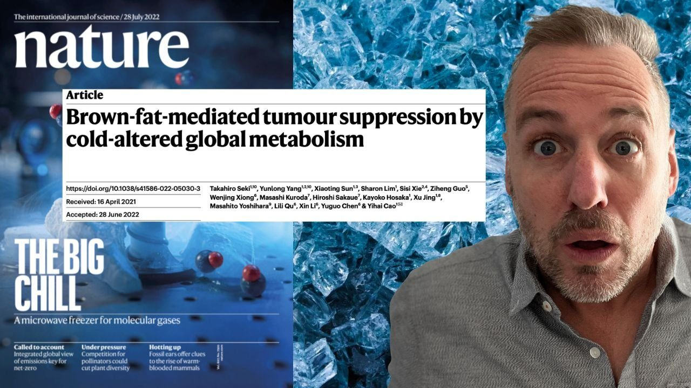

Last month the most astounding research I've ever come across on cold exposure appeared in Nature, the world's most prestigious scientific journal. The study showed how regular cold exposure can slow the growth of cancerous tumors by activating brown fat (BAT) which denies the tumors the glucose that then need to sustain their uncontrolled growth. The article, titled "Brown Fat mediated tumor suppression by cold-altered global metabolism" is the first real peer-reviewed study making the link that the type of cold exposure that I wrote about in What Doesn't Kill Us and The Wedge had a significant anti-cancer effect. Indeed, the results were so promising that the researchers said that cold exposure "will provide a general approach for the effective treatment of various cancers." On the page, that sentence might not look like much, but it basically means that cold exposure could become a staple of any anti-cancer treatment as well as for anyone looking to prevent themselves from getting it.
In this week's video I dive into exactly what the article found, how the scientists isolated brown fat as the key component, and the anti-sugar diet that everyone needs to get on board with right now. I can't tell you how exiting this study is. It's probably the most important study I've read all year.
If you want to learn more about cold exposure and all things environmental training, now might be a good time to pick these books up again. Heck, I might have to put out updated versions.